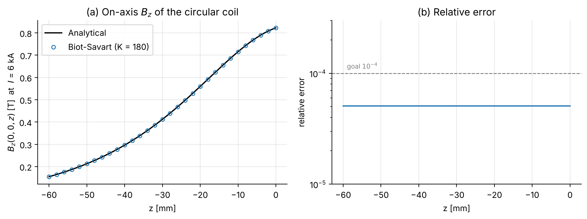
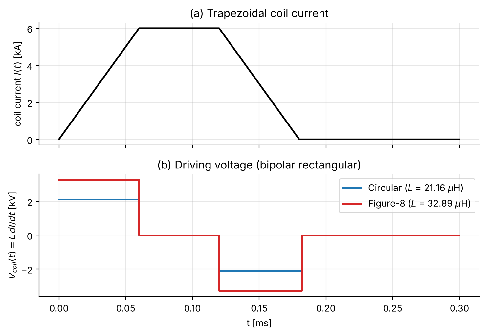
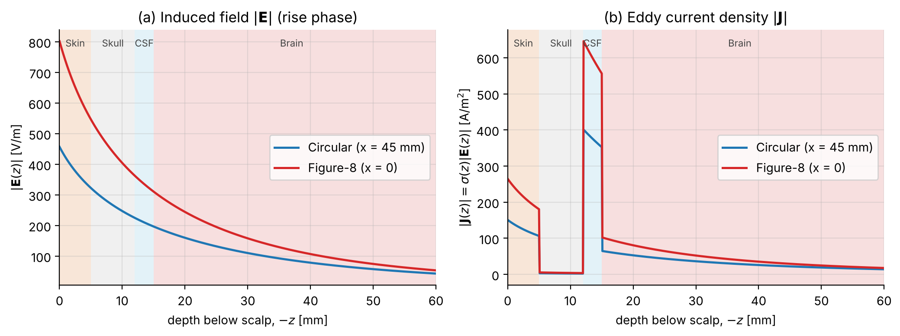
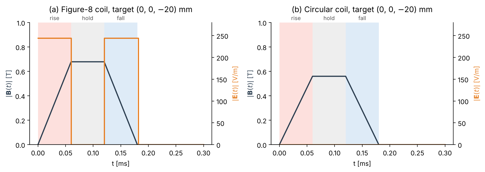
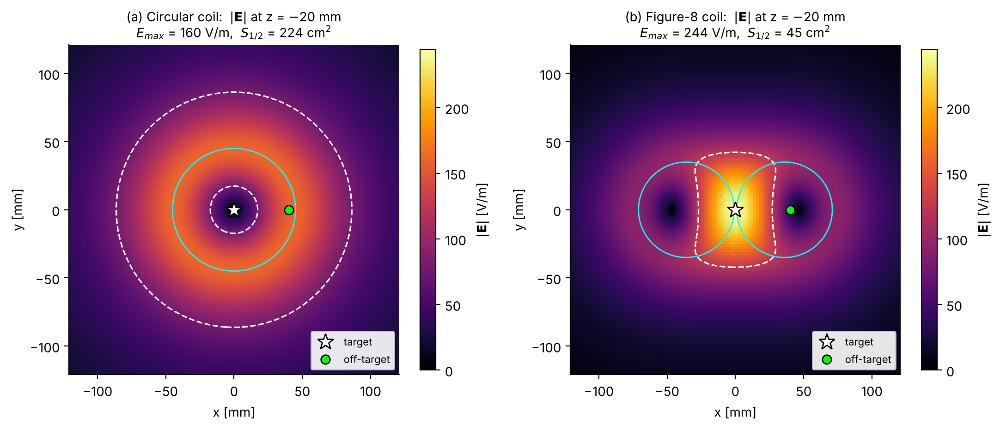
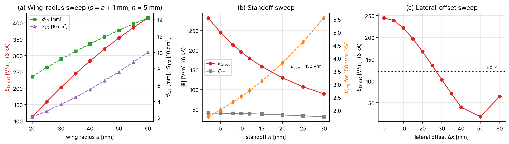
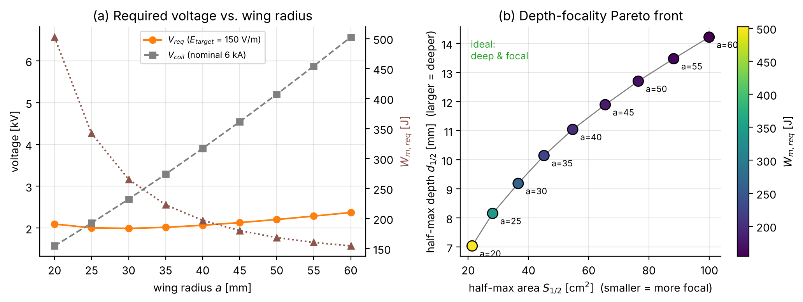
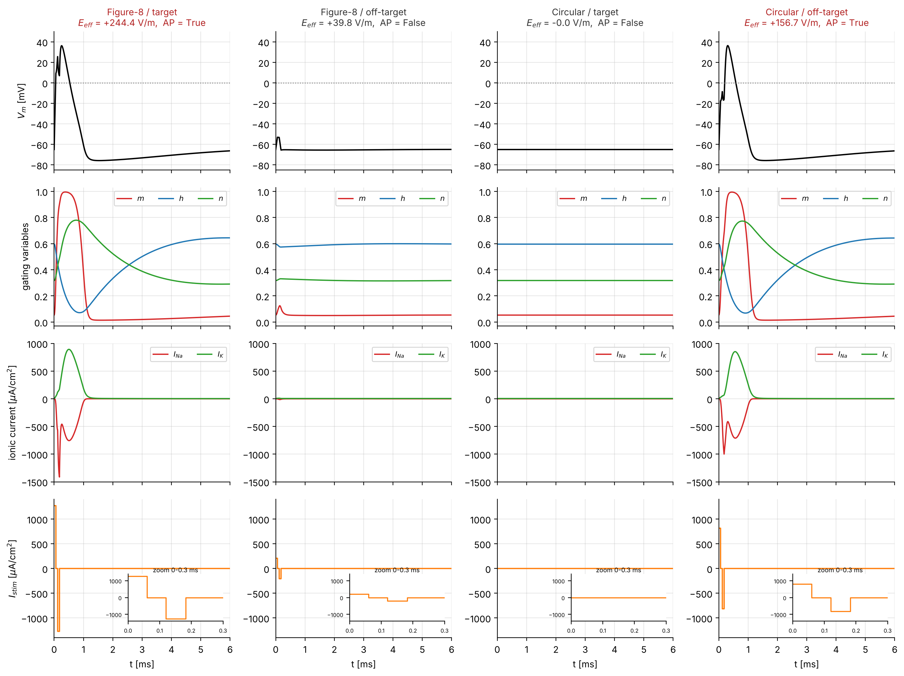
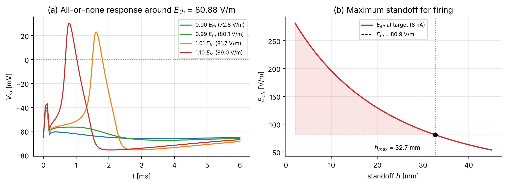

학번: 이름:
본 보고서는 TMS 코일(원형, 8자형)에 사다리꼴 펄스 전류를 흘렸을 때 생기는 자기장과 4층 평면 두부 모델에 유도되는 전기장을 자기 준정역학(MQS) 근사로 계산하고, 그 전기장이 호지킨-헉슬리 뉴런을 발화시키는지 확인한 결과를 정리한 것이다. 수치 계산은 task1_coil_field.py, task2_tissue_induction.py, task3_neuron.py에 구현하였고, 그림과 수치표는 make_figures.py로 생성하였다.
반경 $a$, 권선 수 $N$인 원형 루프가 $z'=h$ 평면에 놓여 있고 중심이 $(0,0,h)$이다. 전류 $I$는 $+z$에서 내려다볼 때 반시계방향($+\mathbf a_\phi$)으로 흐른다. 비오-사바르 법칙은
$$\mathbf B(\mathbf r)=\frac{\mu_0 N I}{4\pi}\oint\frac{d\mathbf l'\times\mathbf R}{R^3},\qquad \mathbf R=\mathbf r-\mathbf r',\quad R=|\mathbf R|$$이다. 원천점과 전류 요소를 각도 $\phi'$로 쓰면
$$\mathbf r'=(a\cos\phi',\ a\sin\phi',\ h),\qquad d\mathbf l'=a\,d\phi'\,\mathbf a_\phi=a\,d\phi'\,(-\sin\phi',\ \cos\phi',\ 0)$$이고, 관측점을 중심축 위 $\mathbf r=(0,0,z)$로 두면
$$\mathbf R=(-a\cos\phi',\ -a\sin\phi',\ z-h),\qquad R=\sqrt{a^2+(z-h)^2}$$로 $R$이 $\phi'$와 무관한 상수가 된다. 외적을 성분별로 계산하면
$$d\mathbf l'\times\mathbf R=a\,d\phi'\begin{vmatrix}\mathbf a_x&\mathbf a_y&\mathbf a_z\\-\sin\phi'&\cos\phi'&0\\-a\cos\phi'&-a\sin\phi'&z-h\end{vmatrix} =a\,d\phi'\,\big[(z-h)\cos\phi'\,\mathbf a_x+(z-h)\sin\phi'\,\mathbf a_y+a\,\mathbf a_z\big]$$이다. $z$ 성분은 $a\sin^2\phi'+a\cos^2\phi'=a$에서 나온다. 이를 $\phi'=0\sim2\pi$로 적분하면 $\int_0^{2\pi}\cos\phi'\,d\phi'=\int_0^{2\pi}\sin\phi'\,d\phi'=0$이므로 수평 성분은 서로 마주 보는 전류 요소끼리 상쇄되어 사라지고, $z$ 성분만 남는다.
$$\mathbf B(0,0,z)=\frac{\mu_0NI}{4\pi}\cdot\frac{a\cdot a\cdot 2\pi}{R^3}\,\mathbf a_z$$ $$B_z(0,0,z)=\frac{\mu_0 N I a^2}{2\left[a^2+(z-h)^2\right]^{3/2}}$$검산: $z=h$(루프 중심)에서 $B_z=\mu_0NI/(2a)$로 잘 알려진 결과와 일치하고, $|z-h|\gg a$에서는 $B_z\approx\mu_0 N I a^2/(2|z-h|^3)$로 자기 쌍극자($m=NI\pi a^2$)의 축상 자기장 $\mu_0 m/(2\pi|z-h|^3)$과 일치한다. 본 과제의 값($a=45$ mm, $h=5$ mm, $N=10$, $I=6$ kA)을 넣으면 두피 표면($z=0$)에서 $B_z=0.822$ T, 피질 깊이($z=-20$ mm)에서 $B_z=0.560$ T이다.
원형 루프를 $K=180$개의 직선 선분으로 나누었다. $k$번째 선분의 중점은 호의 중앙 각도 $\phi_k=(k+\tfrac12)\Delta\phi$ ($\Delta\phi=2\pi/K$)의 원주 위 점에 두고, 현 벡터는 길이 $2a\sin(\Delta\phi/2)$, 방향은 접선 $\pm\mathbf a_\phi$로 하였다. 8자형 코일은 중심 $(-s,0,h)$의 반시계방향 루프와 $(+s,0,h)$의 시계방향 루프를 이어 붙였다. 이렇게 하면 왼쪽 날개의 가장 오른쪽 점($\phi=0$)과 오른쪽 날개의 가장 왼쪽 점($\phi=\pi$)에서 전류가 모두 $+\mathbf a_y$가 된다. 단위 전류당 장은 다음 이산 합으로 계산하였다.
$$\tilde{\mathbf A}(\mathbf r)=\frac{\mu_0N}{4\pi}\sum_k\frac{d\mathbf l_k}{R_k},\qquad \tilde{\mathbf B}(\mathbf r)=\frac{\mu_0N}{4\pi}\sum_k\frac{d\mathbf l_k\times(\mathbf r-\mathbf r'_k)}{R_k^3}$$
구간 $z\in[-60\ \text{mm},0]$의 121개 점에서 최대 상대오차는 $5.077\times10^{-5}$로 목표 $10^{-4}$보다 작다. 오차가 $z$와 무관하게 일정한 이유는 다음과 같다. 중심축에서는 모든 선분이 관측점까지 같은 거리 $R$에 있고 접선 방향도 정확하므로, 수치해와 해석해의 차이는 선분 길이의 합(내접 다각형 둘레 $2Ka\sin(\Delta\phi/2)$)과 원주 $2\pi a$의 비에서만 생긴다.
$$\frac{B_z^{\text{num}}}{B_z^{\text{ana}}}=\frac{\sin(\Delta\phi/2)}{\Delta\phi/2}\approx1-\frac{(\Delta\phi)^2}{24}=1-5.077\times10^{-5}\qquad(\Delta\phi=2\pi/180)$$이 예측값은 수치 결과와 유효숫자 네 자리까지 일치한다. 오차는 $K^{-2}$에 비례하므로 $K$를 두 배로 하면 4분의 1로 줄어든다.
점 $\mathbf r_0$ 주변 $\pm\delta$ ($\delta=10^{-5}$ m)의 6개 점에서 $\tilde{\mathbf A}$를 구해 $\partial\tilde A_i/\partial x_j\approx[\tilde A_i(\mathbf r_0+\delta\mathbf a_j)-\tilde A_i(\mathbf r_0-\delta\mathbf a_j)]/2\delta$로 회전을 조립하고, 비오-사바르 합으로 직접 구한 $\tilde{\mathbf B}$와 비교하였다.
| 코일 / 점 [mm] | $\tilde{\mathbf B}$ (비오-사바르) | $\nabla\times\tilde{\mathbf A}$ (중앙 차분) | 상대오차 |
|---|---|---|---|
| 원형 / (45, 0, −20) | $(-6.35969,\ 0,\ 3.54449)\times10^{-5}$ | $(-6.35969,\ 0,\ 3.54449)\times10^{-5}$ | $6.24\times10^{-8}$ |
| 8자형 / (0, 0, −20) | $(-1.130416,\ 0,\ 0)\times10^{-4}$ | $(-1.130416,\ 0,\ 0)\times10^{-4}$ | $8.11\times10^{-8}$ |
두 점 모두 상대오차가 $10^{-7}$ 이하로, $\tilde{\mathbf A}$와 $\tilde{\mathbf B}$의 구현이 서로 일관됨을 확인하였다. 8자형 코일 중심 아래에서는 $\tilde{\mathbf B}$가 $-\mathbf a_x$ 방향 성분만 가지는데, 이는 접합부의 $+\mathbf a_y$ 전류 아래에서 오른손 법칙으로 예상되는 방향과 같다.
참고: 명세서의 원형 코일 검증점은 (45, 0, −20) mm인데, 제공된 task1_coil_field.py의 main()은 (40, 0, −20) mm인 R_OFF_TARGET을 사용한다. 표 1은 명세서의 (45, 0, −20) mm에서 계산한 값이며, (40, 0, −20) mm에서의 상대오차는 $5.23\times10^{-8}$이다.
인덕턴스는 쇄교 자속 $\Lambda=N\oint\mathbf A\cdot d\mathbf l$을 전류로 나눈 값이며, 이를 선분 쌍에 대한 이중합으로 계산하였다(노이만 공식). 같은 선분끼리의 거리 0에 의한 발산은 세선 기하평균거리 $d_{\text{eff}}=r_we^{-1/4}=1.168$ mm로 정칙화하였다.
$$L\ \text{또는}\ M_{12}=\frac{\mu_0N^2}{4\pi}\sum_{i,j}\frac{d\mathbf l_{1,i}\cdot d\mathbf l_{2,j}}{\sqrt{|\mathbf r_{1,i}-\mathbf r_{2,j}|^2+d_{\text{eff}}^2}}$$| 항목 | 원형 코일 | 8자형 코일 |
|---|---|---|
| 수치 인덕턴스 $L$ | 21.158 μH | 32.887 μH |
| 세선 공식 $\mu_0N^2a[\ln(8a/r_w)-1.75]$ | 21.096 μH (차이 +0.29%) | 날개 1개: 15.303 μH |
| 날개별 $L_1,\ L_2$ | — | 15.317 μH, 15.317 μH |
| 상호 인덕턴스 $M_{12}$ | — | +1.127 μH (결합 계수 $k=0.074$) |
| $L_1+L_2+2M_{12}$ | — | 32.886859 μH (직접 계산 32.886859 μH) |
| 구동 전압 $V_{\text{coil}}=L\,dI/dt$ | ±2.116 kV | ±3.289 kV |
| 최대 저장 에너지 $W_m=\tfrac12LI_{\text{peak}}^2$ | 380.8 J | 592.0 J |
(1) 세선 공식과의 비교. 원형 코일의 수치 인덕턴스는 세선 공식보다 0.29% 크다. 세선 공식은 $r_w\ll a$에서의 점근식이고 수치 계산은 유한한 선분과 정칙화 거리를 쓰므로 이 정도 차이는 타당하다. 날개 하나($a=35$ mm)도 수치 15.317 μH, 공식 15.303 μH로 0.09% 이내에서 일치한다.
(2) $M_{12}$ 부호의 물리적 의미. $M_{12}>0$이다. 왼쪽 날개(반시계)가 만드는 자속은 자기 내부에서 $+z$ 방향이고, 자기장선이 닫히면서 루프 바깥인 오른쪽 날개 영역에서는 $-z$ 방향으로 되돌아온다. 오른쪽 날개는 시계방향으로 감겨 있어 면의 법선(오른손 법칙)이 $-z$이므로, 이 되돌아오는 자속은 오른쪽 날개 자신의 자속과 같은 부호로 쇄교한다. 즉 두 날개는 서로의 자속을 더해 주는 방향으로 직렬 연결되어 있다. 이중합으로 보아도, 가장 가까이 있어 기여가 큰 접합부의 선분들이 모두 $+\mathbf a_y$로 나란하므로 $d\mathbf l_1\cdot d\mathbf l_2>0$이다. 따라서 전체 인덕턴스는 $L_{\text{fig8}}=L_1+L_2+2M_{12}>L_1+L_2$가 된다. 두 날개를 같은 방향으로 감았다면 $M_{12}<0$이 되고 접합부 전류가 서로 반대라 중심 아래 전기장이 상쇄되었을 것이다. 접합부에서 전기장이 보강되는 것과 $M_{12}>0$은 같은 현상의 두 측면이다. 다만 결합 계수가 0.074로 작아 $2M_{12}$는 전체의 6.9%에 그친다.
(3) 분해 검증. $L_1+L_2+2M_{12}=32.886859\ \mu\text{H}$가 전체 코일에서 직접 구한 $L_{\text{fig8}}$과 표시한 자리까지 일치한다. 상호 인덕턴스에도 같은 $d_{\text{eff}}$를 쓰면 전체 이중합이 (날개 1 내부) + (날개 2 내부) + 2 × (날개 간) 항으로 정확히 나뉘기 때문이다.

(4) 구동 전압과 에너지. 코일 저항을 무시하면 $V_{\text{coil}}=L\,dI/dt$이므로 상승 구간에서 $+V$, 유지 구간에서 0, 하강 구간에서 $-V$인 양극성 구형파가 된다. 같은 전류 파형을 만들 때 8자형 코일은 인덕턴스가 1.55배 커서 전압과 저장 에너지도 1.55배 필요하다.
준정적 전기장은 $\mathbf E=-\nabla V-\partial\mathbf A/\partial t$이다. $z\le0$의 4개 수평 층(전도도 $\sigma_1,\dots,\sigma_4$)과 $z'=+h$ 평면의 수평 코일에 대해 $\nabla V=0$임을 보인다.
$N$회 감긴 코일의 벡터 퍼텐셜은
$$\mathbf A(\mathbf r,t)=\frac{\mu_0NI(t)}{4\pi}\oint_{\text{coil}}\frac{d\mathbf l'}{|\mathbf r-\mathbf r'|}$$이다. 코일 전체가 평면 $z'=h$에 놓여 있으므로 모든 전류 요소는 $d\mathbf l'=dx'\,\mathbf a_x+dy'\,\mathbf a_y$로 $z$ 성분이 없다. 피적분 함수의 방향은 $d\mathbf l'$의 방향뿐이므로, 관측점의 위치와 관계없이
$$A_z(\mathbf r,t)=0\quad(\text{전 공간}),\qquad \mathbf A=A_x\,\mathbf a_x+A_y\,\mathbf a_y$$이다. 0이 아닌 성분은 수평 성분 $A_x, A_y$이며, $\partial\mathbf A/\partial t=\tilde{\mathbf A}\,dI/dt$ 역시 수평 성분만 가진다.
발산은 관측점에 대한 미분을 적분 안으로 넣어 계산한다. $R=|\mathbf r-\mathbf r'|$일 때 $\nabla(1/R)=-\nabla'(1/R)$이므로
$$\nabla\cdot\mathbf A=\frac{\mu_0NI}{4\pi}\oint\nabla\!\left(\frac1R\right)\cdot d\mathbf l'=-\frac{\mu_0NI}{4\pi}\oint\nabla'\!\left(\frac1R\right)\cdot d\mathbf l'=0$$이다. 마지막 등식은 기울기의 닫힌 경로 선적분이 0이기 때문이다(관측점이 도선 위에 있지 않으면 $1/R$은 경로 위에서 매끄럽다). 즉 닫힌 전류 루프의 $\mathbf A$는 쿨롱 게이지 $\nabla\cdot\mathbf A=0$을 만족한다.
전도도가 $\sigma_m$으로 균일한 $m$번째 층 내부에서 $\mathbf J=\sigma_m(-\nabla V-\partial\mathbf A/\partial t)$를 준정적 연속 방정식 $\nabla\cdot\mathbf J=0$에 대입하면
$$\nabla\cdot\mathbf J=-\sigma_m\nabla^2V-\sigma_m\frac{\partial}{\partial t}(\nabla\cdot\mathbf A)=0$$이고, (a)에서 $\nabla\cdot\mathbf A=0$이므로
$$\nabla^2V=0\qquad(\text{각 층 내부, }m=1,\dots,4)$$즉 $V$는 각 층에서 라플라스 방정식을 만족한다. $V$의 체적 원천항이 될 수 있는 것은 $-\partial(\nabla\cdot\mathbf A)/\partial t$뿐인데 이것이 0이다. 물리적으로는 1차 유도 전기장 $-\partial\mathbf A/\partial t$가 발산이 없는(solenoidal) 장이어서, 균일한 도체 안에서 이 장이 흘리는 전류 $\sigma_m(-\partial\mathbf A/\partial t)$는 어느 점에서도 모이거나 흩어지지 않고 닫힌 곡선을 따라 돈다. 전류가 모이는 점이 없으므로 체적 전하가 쌓이지 않고, 따라서 $V$를 만드는 체적 원천이 없다.
전도도가 변하는 곳까지 포함해 쓰면 $\nabla\cdot(\sigma\nabla V)=-\nabla\sigma\cdot\partial\mathbf A/\partial t-\sigma\,\partial(\nabla\cdot\mathbf A)/\partial t$이다. 평면 층 구조에서 $\nabla\sigma$는 경계면에서만 0이 아니고 방향이 $\pm\mathbf a_z$이므로 $\nabla\sigma\cdot\partial\mathbf A/\partial t=(d\sigma/dz)\,\partial A_z/\partial t=0$이다. 수평 성분 $A_x,A_y$는 $\nabla\sigma$와 수직이어서 경계면에서도 원천을 만들지 못한다. 이것을 경계 조건의 형태로 정리한 것이 (c)이다.
경계면 $z=z_k$에서 두 가지 조건이 성립한다.
이다. 즉 법선 방향 전기장에는 코일의 1차 유도 항이 전혀 들어 있지 않다.
공기–두피 경계 ($z=0$). 공기는 $\sigma_{\text{air}}=0$이라 전류가 흐를 수 없으므로 $J_z(0^-)=0$이다.
$$\sigma_1\left(-\frac{\partial V}{\partial z}-\frac{\partial A_z}{\partial t}\right)_{z=0^-}=0\quad\Longrightarrow\quad\left.\frac{\partial V}{\partial z}\right|_{z=0^-}=0$$내부 경계 ($z_k=-5,\ -12,\ -15$ mm).
$$V(z_k^+)=V(z_k^-),\qquad\sigma_m\left.\frac{\partial V}{\partial z}\right|_{z_k^+}=\sigma_{m+1}\left.\frac{\partial V}{\partial z}\right|_{z_k^-}$$모든 경계 조건이 우변에 원천항이 없는 동차(homogeneous) 조건이다. 만약 코일이 기울어져 $A_z\ne0$이었다면 공기–두피 경계 조건은 $\partial V/\partial z=-\partial A_z/\partial t\ne0$, 내부 경계 조건은 $\sigma_m\partial_zV|_{+}-\sigma_{m+1}\partial_zV|_{-}=-(\sigma_m-\sigma_{m+1})\,\partial A_z/\partial t$가 되어 경계면에 표면 전하가 쌓이고 $V\ne0$이 되었을 것이다.
$V$가 만족하는 문제는 다음과 같다: 각 층에서 $\nabla^2V=0$, 내부 경계에서 $V$와 $\sigma\,\partial V/\partial z$가 연속, $z=0^-$에서 $\partial V/\partial z=0$, $|\mathbf r|\to\infty$에서 $V\to0$. $V\equiv0$은 이 조건을 모두 만족한다. 이것이 유일한 해임을 에너지 항등식으로 보인다. 조직 영역 전체 $\Omega$ ($z<0$)에서
$$\int_\Omega\sigma|\nabla V|^2\,dv=\sum_{m=1}^4\left[\oint_{S_m}\sigma_mV\,\nabla V\cdot d\mathbf S-\int_{\Omega_m}\sigma_mV\,\nabla^2V\,dv\right]$$이다(각 층에 $\nabla\cdot(V\nabla V)=|\nabla V|^2+V\nabla^2V$와 발산 정리를 적용). 우변의 항을 하나씩 보면,
따라서 $\int_\Omega\sigma|\nabla V|^2\,dv=0$이고, $\sigma>0$이므로 조직 내 모든 점에서 $\nabla V=0$이다. $V$는 상수이며 무한원 조건에 의해 $V=0$이다.
$$V=0,\quad\nabla V=0\qquad\Longrightarrow\qquad\mathbf E(\mathbf r,t)=-\frac{\partial\mathbf A}{\partial t}=-\tilde{\mathbf A}(\mathbf r)\,\frac{dI}{dt}\qquad(\text{4개 층 모두})$$이 식에는 $\sigma_m$이 들어 있지 않다. 전기장은 코일 형상($\tilde{\mathbf A}$)과 전류 변화율만으로 정해지고, 전도도는 $\mathbf J=\sigma_m\mathbf E$를 통해 전류 밀도에만 영향을 준다.
두개골이 TMS 전기장을 감쇠시키지 않는 이유. 첫째, 전기장의 원인이 다르다. TMS의 전기장은 전극에서 흘려 넣은 전류가 아니라 시변 자속이 만드는 기전력이다. 조직은 비자성체이고 침투 깊이(두피·뇌 8.8 m, CSF 3.8 m, 두개골 50 m)가 두부보다 훨씬 커서 자기장은 두개골을 그대로 통과한다. 둘째, 유도 전기장이 층 경계면과 평행하다. $E_z=0$이므로 전류는 각 층 안에서 수평 폐곡선을 따라 돌 뿐 두개골을 가로지를 필요가 없다. 경계면을 수직으로 지나는 전류가 없으니 경계에 표면 전하가 쌓이지 않고, 1차 유도 전기장을 가리는 2차 전기장도 생기지 않는다. 두개골은 단지 자기 층 안에서 작은 전류 $\sigma_2\mathbf E$를 흘릴 뿐이다. 반면 두피 전기자극에서는 전류가 두피→두개골→CSF→뇌를 직렬로 지나야 하고 $J_z$가 연속이어야 하므로, 저항이 큰 두개골에서 전압 강하가 대부분 일어나고 전류의 상당 부분은 두피를 따라 옆으로 빠져나간다.
이하의 모든 전기장은 Task 2.1의 결과 $\mathbf E=-\tilde{\mathbf A}\,dI/dt$로 계산하였고, 크기는 상승 구간($dI/dt=10^8$ A/s) 값이다.

| 코일 | $|\mathbf E|$ [V/m] at 깊이 | 층별 최대 $|\mathbf J|$ [A/m²] | |||||||
|---|---|---|---|---|---|---|---|---|---|
| 0 mm | 5 mm | 12 mm | 15 mm | 20 mm | 두피 | 두개골 | CSF | 뇌 | |
| 8자형 | 802.2 | 546.7 | 362.7 | 310.8 | 244.4 | 264.7 | 5.43 | 645.8 | 102.0 |
| 원형 | 457.1 | 322.7 | 225.0 | 196.8 | 160.0 | 150.9 | 3.21 | 400.9 | 64.7 |
$|\mathbf E|$는 코일에서 멀어질수록 매끄럽게 감소하며 층 경계에서 꺾이거나 끊어지지 않는다. Task 2.1에서 보였듯 $\mathbf E$가 전도도와 무관하고, 경계면에 평행한 접선 성분만 있어 경계 조건(접선 $\mathbf E$ 연속)이 자동으로 만족되기 때문이다. 반면 $|\mathbf J|=\sigma|\mathbf E|$는 같은 $\mathbf E$에 층마다 다른 $\sigma$가 곱해지므로 경계에서 전도도 비만큼 불연속으로 변한다. 두개골→CSF 경계($z=-12$ mm)에서 $1.79/0.010=179$배로 뛰고, CSF→뇌 경계($z=-15$ mm)에서 $0.33/1.79=1/5.4$로 떨어진다.
이를 CSF 단락(shunting)이라 한다. 수평으로 도는 유도 전류의 입장에서 네 층은 같은 기전력이 걸린 병렬 도체판이다. 같은 전기장이 걸리면 전도도가 가장 큰 CSF에 전류가 집중되고, 전도도가 가장 작은 두개골에는 거의 흐르지 않는다. CSF는 두께가 3 mm에 불과하지만 전류 밀도는 바로 아래 뇌의 5.4배이고 두개골의 100배 이상이다. 단, 이 전류 집중은 평면 층 모델에서는 피질의 전기장 자체를 바꾸지 않는다.

8자형 코일의 표적점에서 $|\mathbf B|$는 전류를 따라 사다리꼴로 변하며 유지 구간에서 최대 0.678 T이다. $|\mathbf E|$는 상승·하강 구간에서 244.4 V/m로 일정하고 유지 구간에서 정확히 0이다. $\mathbf B=I(t)\tilde{\mathbf B}$는 전류에 비례하지만 $\mathbf E=-\tilde{\mathbf A}\,dI/dt$는 전류의 시간 미분에 비례하기 때문이다. 패러데이 법칙 $\nabla\times\mathbf E=-\partial\mathbf B/\partial t$로 보면, 유지 구간에서는 자속이 아무리 커도 변하지 않으므로 기전력이 없다. 정자기장은 전기장을 유도하지 않는다. 상승 구간과 하강 구간에서는 $dI/dt$의 부호가 반대이므로 $\mathbf E$의 방향도 반대이다(크기 그래프에서는 구분되지 않는다).
원형 코일(그림 4(b))은 표적점에서 $|\mathbf B|$가 0.560 T까지 올라가지만 $|\mathbf E|$는 모든 시간에서 0이다(수치 $2\times10^{-14}$ V/m). 이 점은 Task 4의 고찰 1에서 다시 다룬다.

| 지표 | 원형 코일 | 8자형 코일 |
|---|---|---|
| $E_{\text{target}}$ [V/m] | $2.1\times10^{-14}$ (≈ 0) | 244.4 |
| $E_{\text{off}}$ [V/m] | 156.7 | 39.8 |
| $E_{\max}$ [V/m] | 160.0 | 244.4 |
| 선택비 $E_{\text{target}}/E_{\text{off}}$ | ≈ 0 | 6.15 |
| 반치 면적 $S_{1/2}$ [cm²] | 224.2 | 45.2 |
| 반치 깊이 $d_{1/2}$ [mm] | 11.66 | 10.15 |
| $L$ [μH] / $V_{\text{coil}}$ [kV] / $W_m$ [J] (명목 6 kA) | 21.16 / 2.116 / 380.8 | 32.89 / 3.289 / 592.0 |
| 기준 전기장 $E_{\text{ref}}$ | $E_{\max}$ = 160.0 V/m | $E_{\text{target}}$ = 244.4 V/m |
| $I_{\text{req}}$ [kA] | 5.62 | 3.68 |
| $V_{\text{req}}$ [kV] | 1.98 | 2.02 |
| $W_{m,\text{req}}$ [J] | 334.7 | 223.0 |
원형 코일의 전기장은 코일 도선 바로 아래($\rho\approx45$ mm)에서 최대인 고리 모양이고 중심에서는 0이다. 반치 영역이 반경 약 17 mm에서 86 mm에 이르는 넓은 고리여서 $S_{1/2}=224$ cm²에 달한다. 코일 중심 아래의 표적은 전혀 자극하지 못하고, 40 mm 떨어진 비표적점에 최대값의 98%가 걸린다.
8자형 코일은 두 날개의 전류가 같은 방향으로 겹치는 접합부 바로 아래에서 단일 최대값을 가진다. 최대 전기장이 원형의 1.53배이고 반치 면적은 약 1/5이다. 표적점이 곧 핫스팟이며 비표적점(오른쪽 날개 중심 부근)의 전기장은 표적의 1/6.15이다.
반치 깊이는 8자형(10.15 mm)이 원형(11.66 mm)보다 오히려 작다. 초점이 좁은 코일일수록 깊이 방향으로 더 빨리 감쇠한다는 뜻이며, Task 2.3의 트레이드오프와 같은 경향이다. 150 V/m를 만드는 데 필요한 전압은 두 코일이 약 2 kV로 비슷하지만, 원형 코일의 값은 표적이 아닌 고리 핫스팟을 기준으로 한 것이다.

| $a$ [mm] | $E_{\text{target}}$ [V/m] | $d_{1/2}$ [mm] | $S_{1/2}$ [cm²] | $L$ [μH] | $V_{\text{coil}}$ [kV] | $V_{\text{req}}$ [kV] | $W_{m,\text{req}}$ [J] |
|---|---|---|---|---|---|---|---|
| 20 | 112.6 | 7.04 | 21.3 | 15.74 | 1.57 | 2.10 | 502.4 |
| 25 | 158.5 | 8.16 | 28.1 | 21.20 | 2.12 | 2.01 | 341.9 |
| 30 | 202.7 | 9.19 | 36.6 | 26.92 | 2.69 | 1.99 | 265.4 |
| 35 | 244.4 | 10.15 | 45.2 | 32.89 | 3.29 | 2.02 | 223.0 |
| 40 | 283.4 | 11.05 | 54.7 | 39.06 | 3.91 | 2.07 | 197.0 |
| 45 | 319.7 | 11.90 | 65.5 | 45.43 | 4.54 | 2.13 | 180.0 |
| 50 | 353.6 | 12.71 | 76.4 | 51.99 | 5.20 | 2.21 | 168.4 |
| 55 | 385.3 | 13.48 | 88.2 | 58.73 | 5.87 | 2.29 | 160.2 |
| 60 | 414.9 | 14.22 | 100.0 | 65.65 | 6.57 | 2.37 | 154.5 |
날개 반경 $a$. 반경을 키우면 같은 전류에서 표적 전기장이 커지고(20→60 mm에서 112.6→414.9 V/m), 반치 깊이가 깊어지지만(7.0→14.2 mm), 반치 면적도 함께 커져(21→100 cm²) 초점성이 나빠진다. 큰 루프일수록 장의 공간적 변화가 완만해져 깊이 방향으로도 옆 방향으로도 천천히 줄어들기 때문이다. 인덕턴스는 $a\ln(8a/r_w)$에 따라 거의 선형으로 증가한다.
이격 거리 $h$. 코일을 두피에서 띄우면 표적 전기장이 빠르게 줄어든다($h=2,\ 5,\ 15,\ 30$ mm에서 281.6, 244.4, 158.2, 89.0 V/m). 반면 비표적 전기장은 39.9→30.7 V/m로 거의 변하지 않아 선택비가 7.05($h=2$ mm)에서 2.89($h=30$ mm)로 떨어진다. 즉 거리가 멀어지면 세기와 초점성을 함께 잃는다. $L$은 $h$와 무관하므로 150 V/m를 유지하려면 전류를 $1/E_{\text{target}}$에 비례해 올려야 하고, 요구 전압은 1.75→5.55 kV, 요구 에너지는 $1/E_{\text{target}}^2$에 비례해 168→1683 J로 10배가 된다. 머리카락이나 코일 케이스 두께에 해당하는 5→8 mm의 변화만으로도 전압이 15%, 에너지가 31% 더 든다.
수평 정렬 오차 $\Delta x$. 코일이 $x$ 방향으로 어긋나면 고정된 표적점의 전기장은 5 mm에서 −2.5%, 10 mm에서 −9.4%, 20 mm에서 −31.6% 감소하고 약 27 mm에서 절반이 된다. 핫스팟 근처는 극대점이라 수 mm의 오차에는 둔감하지만 10 mm를 넘으면 급격히 떨어진다. $\Delta x\approx47$ mm에서 0을 지난 뒤 다시 커지는데, 이는 표적이 날개 바깥쪽 도선 아래로 들어가면서 전기장의 방향이 반대($E_{\text{eff}}<0$)로 바뀐 것이다. 이 영역에서는 크기가 커져도 뉴런을 과분극시킬 뿐이다.

$V_{\text{req}}$ 대 $a$. 요구 전압은 $V_{\text{req}}=L\,(dI/dt)_{\text{req}}=E_{\text{goal}}\,L/|\tilde{\mathbf A}_{\text{target}}|$이므로 인덕턴스와 표적점 벡터 퍼텐셜의 비로 정해진다. 결과는 1.99~2.37 kV로 거의 평탄하며 $a\approx30$ mm에서 완만한 최소(1.99 kV)를 가진다. 반경이 표적까지의 거리(25 mm)보다 작으면 $|\tilde{\mathbf A}_{\text{target}}|$이 급격히 작아져 전압이 올라가고, 반경이 크면 $L$이 $|\tilde{\mathbf A}_{\text{target}}|$보다 빨리 커져 다시 올라간다. 반면 요구 에너지 $W_{m,\text{req}}=\tfrac12LI_{\text{req}}^2$는 502 J에서 154 J로 단조 감소한다. 큰 코일은 필요한 전류가 훨씬 작아서 에너지 면에서 효율적이다.
파레토 프론티어. 이상적인 코일은 그림 7(b)의 왼쪽 위(깊고 좁음)에 있어야 하지만, 실제 설계점들은 왼쪽 아래(얕고 좁음, 에너지 큼)에서 오른쪽 위(깊고 넓음, 에너지 작음)로 이어지는 한 줄 위에 놓인다. $d_{1/2}$를 키우면 반드시 $S_{1/2}$도 커진다.
깊이와 초점성을 동시에 높일 수 없는 이유. 조직 내부에는 코일 전류가 없고 MQS 근사에서 $\nabla\cdot\mathbf A=0$, $\nabla^2\mathbf A=0$이므로 $\mathbf E=-\tilde{\mathbf A}\,dI/dt$의 각 성분은 조직 영역에서 라플라스 방정식을 만족한다. 수평 방향으로 공간 주파수 $k$로 변하는 성분은 깊이 방향으로 $e^{-k|z|}$로 감쇠한다. 좁은 초점은 큰 $k$ 성분으로 만들어지는데, 바로 그 성분이 깊이에 따라 가장 빨리 사라진다. 따라서 표면에서 초점이 좁을수록 얕은 곳에서 소멸하고, 깊이 도달하는 것은 완만하게 변하는(넓게 퍼진) 성분뿐이다. 또한 라플라스 방정식의 해는 원천이 없는 영역 내부에서 극대를 가질 수 없으므로 전기장의 최대는 항상 표면에 있고, 깊은 곳에만 초점을 맺는 것은 원리적으로 불가능하다. 코일 크기 $a$는 이 하나의 길이 척도를 정할 뿐이어서 깊이와 넓이를 따로 조절할 수 없다.
뉴런 위치의 축삭 방향 전기장 $E_{\text{eff}}(t)=\mathbf E\cdot\mathbf u_{\text{neuron}}=-(\tilde{\mathbf A}\cdot\mathbf u_{\text{neuron}})\,dI/dt$를 구해 제공된 호지킨-헉슬리 모델에 입력하였다($I_{\text{stim}}=g_{\text{couple}}E_{\text{eff}}$, $g_{\text{couple}}=5.2\ \mu\text{A\,cm}^{-2}/(\text{V/m})$). $\mathbf u_{\text{neuron}}=-\mathbf a_y$이고 8자형 코일 접합부 아래에서 $\tilde{\mathbf A}$가 $+\mathbf a_y$ 방향이므로, 상승 구간에서 $E_{\text{eff}}>0$(탈분극), 하강 구간에서 $E_{\text{eff}}<0$(과분극)이다.

| 경우 | $E_{\text{eff}}$ (상승) [V/m] | $I_{\text{stim}}$ [μA/cm²] | 상승 종료 시 $V_m$ [mV] | 최대 $V_m$ [mV] | 활동전위 |
|---|---|---|---|---|---|
| 8자형 / 표적 | +244.4 | +1270.9 | +9.5 | +36.2 | 발생 |
| 8자형 / 비표적 | +39.8 | +206.7 | −53.0 | −53.0 | 없음 |
| 원형 / 표적 | 0.0 | 0.0 | −65.0 | −65.0 | 없음 |
| 원형 / 비표적 | +156.7 | +814.7 | −17.5 | +36.3 | 발생 |
8자형 / 표적 (발화). 상승 구간 0.06 ms 동안 $I_{\text{stim}}=1271\ \mu\text{A/cm}^2$가 막 정전용량($C_m=1\ \mu\text{F/cm}^2$)을 충전하여 막전위가 −65 mV에서 +9.5 mV까지 올라간다. 탈분극에 따라 Na⁺ 활성화 변수 $m$이 빠르게 1에 가까워지고 내향 Na⁺ 전류(최대 −1413 μA/cm²)가 흐르기 시작한다. 하강 구간에서 같은 크기의 과분극 전류가 흘러 $V_m$이 잠시 눌리지만, 이미 열린 Na⁺ 채널의 재생적(regenerative) 전류가 이를 이겨 펄스 종료 시점에도 $V_m$이 +7.0 mV로 유지되고 +36.2 mV의 활동전위로 이어진다. 이후 $h$가 감소(Na⁺ 불활성화)하고 $n$이 증가하여 외향 K⁺ 전류(최대 892 μA/cm²)가 막을 재분극시키며, −75.8 mV까지 내려가는 후과분극을 거쳐 안정 전위로 돌아온다.
원형 / 비표적 (발화). $E_{\text{eff}}=156.7$ V/m로 역치의 1.94배이다. 상승 구간 끝의 $V_m$은 −17.5 mV이고, 같은 과정으로 약 0.3 ms에 +36.3 mV의 활동전위가 발생한다. 자극이 약한 만큼 8자형 표적보다 활동전위가 늦게 나타난다.
8자형 / 비표적 (발화 없음). $E_{\text{eff}}=39.8$ V/m로 역치의 0.49배이다. 막전위는 −53.0 mV까지만 올라가고 $m$도 약 0.12까지만 증가하여 Na⁺ 전류가 재생적으로 커지지 못한다. 하강 구간의 반대 방향 전류가 충전된 전하를 되돌려 펄스가 끝나면 거의 안정 전위(−65.3 mV)로 돌아간다.
원형 / 표적 (발화 없음). 코일 중심축에서 $\tilde{\mathbf A}=0$이므로 $E_{\text{eff}}=0$이고 뉴런은 안정 상태에서 전혀 변하지 않는다.
정리. 8자형 코일은 표적 뉴런만 발화시키고 40 mm 떨어진 비표적 뉴런은 발화시키지 않는다. 원형 코일은 정반대로, 중심 아래의 표적은 자극하지 못하고 도선 아래의 비표적 뉴런을 발화시킨다. 활동전위는 실무율(all-or-none)이어서 발화한 두 경우의 최대 $V_m$(+36.2, +36.3 mV)은 자극 세기가 1.56배 다름에도 거의 같다.

단위 파형 $(dI/dt)/(dI/dt)_{\text{rise}}$(상승 +1, 유지 0, 하강 −1)에 find_electric_field_threshold를 적용하여 발화 역치를 구하고, $E\propto I_{\text{peak}}$($T_{\text{rise}}$ 고정)를 이용해 임계 구동 조건을 계산하였다.
| 항목 | 값 |
|---|---|
| 발화 역치 $E_{\text{th}}$ | 80.88 V/m |
| 명목 6 kA에서 표적 $E_{\text{eff}}$ / 역치 대비 여유 | 244.4 V/m / 3.02배 |
| 임계 첨두 전류 $I_{\text{peak,th}}$ | 1.986 kA |
| 임계 구동 전압 $V_{\text{coil,th}}$ | 1.088 kV |
| 임계 저장 에너지 $W_{m,\text{th}}$ | 64.83 J |
| 최대 이격 거리 $h_{\max}$ (6 kA) | 32.68 mm |
그림 9(a)에서 $0.99E_{\text{th}}$는 역치 이하 응답 후 안정 전위로 돌아가고 $1.01E_{\text{th}}$는 완전한 활동전위를 만든다. 역치 바로 위에서는 발화가 약 1.6 ms로 늦어지고 자극이 강할수록 빨라진다.
명목 조건은 역치의 3.02배이므로 전류를 1.986 kA까지 낮춰도 표적이 발화하며, 이때 에너지는 $W\propto I^2$에 따라 명목값 592 J의 약 1/9인 64.8 J이다. 비표적 뉴런(39.8 V/m)이 역치에 도달하려면 $6\times80.88/39.76=12.2$ kA가 필요하므로, 표적만 선택적으로 발화하는 전류 범위는 약 1.99~12.2 kA이다. 명목 6 kA는 이 범위 안에 있다.
명목 전류에서 코일을 두피로부터 32.7 mm까지 띄워도 표적이 발화한다(이분법 40회, $E_{\text{eff}}(h)$는 $h$에 대해 단조 감소). 이때 코일과 표적 사이 거리는 52.7 mm이다.
참고로 simulate_hh_neuron이 보고하는 지연 시간(8자형 표적 0.052 ms)은 $V_m$이 0 mV를 처음 넘는 시각이다. 8자형 표적의 경우 자극 전류가 커서 상승 구간의 직접 충전만으로 0 mV를 넘으므로, 이 값은 활동전위 정점 시각이 아니다.
뉴런을 자극하는 것은 전하에 힘을 가해 막전류를 흘리는 전기장이며, MQS 근사에서 그 전기장은 $\mathbf E=-\partial\mathbf A/\partial t=-\tilde{\mathbf A}(\mathbf r)\,dI/dt$이다. 이 식은 공간적으로는 $\mathbf B$가 아닌 $\mathbf A$의 분포를, 시간적으로는 $I$가 아닌 $dI/dt$를 따른다.
위치. 원형 코일의 피질 평면에서 $|\mathbf B|$는 중심 부근에서 가장 크지만(중심 0.560 T, 평면 최대 0.565 T), 중심에서 $|\mathbf E|=0$이고 최대 전기장 160 V/m는 도선 아래 $\rho\approx45$ mm의 고리에서 나타난다. 축대칭 때문에 $\mathbf A=A_\phi(\rho,z)\mathbf a_\phi$이고 축 위에서는 $\mathbf a_\phi$ 방향이 정의되지 않으므로 $A_\phi(0,z)=0$이어야 한다. 패러데이 법칙의 적분형으로 보면 반경 $\rho$인 원에 대해 $E_\phi\cdot2\pi\rho=-d\Phi/dt$이고 축 근처에서 $\Phi\approx B_z\pi\rho^2$이므로 $E_\phi\approx-(\rho/2)\,dB_z/dt$이다. 전기장은 그 점의 $B$가 아니라 그 점을 지나는 폐곡선이 둘러싼 자속의 변화율로 정해지며, 중심에서는 둘러싼 면적이 0이다. $\mathbf B=\nabla\times\mathbf A$는 $\mathbf A$의 공간 변화율이므로 $\mathbf A$가 0을 지나며 가장 가파르게 변하는 중심에서 $\mathbf B$가 크고, $\mathbf A$가 최대인 도선 아래에서 $\mathbf E$가 크다. 8자형 코일이 중심 아래를 자극할 수 있는 것은 두 날개의 $\mathbf A$가 접합부 아래에서 같은 방향으로 더해지기 때문이다.
시간. 유지 구간에서 $|\mathbf B|$는 최대(8자형 표적 0.678 T)지만 $dI/dt=0$이므로 $\mathbf E=0$이다. 자속이 아무리 커도 변하지 않으면 기전력이 없다. 자극은 $|\mathbf B|$가 0에서 최대로 변하는 상승 구간에 일어나며, 그림 8에서 뉴런의 탈분극이 상승 구간에 진행됨을 확인하였다. 따라서 TMS 코일의 성능은 첨두 자기장이 아니라 $|\tilde{\mathbf A}|\,dI/dt$로 평가해야 한다.
Task 2.1에서 평면 층과 수평 코일의 조합에서는 $A_z=0$이어서 유도 전기장이 경계면에 평행하고, 경계면에 표면 전하가 쌓이지 않아 $\nabla V=0$임을 보였다. 따라서 $\mathbf E=-\tilde{\mathbf A}\,dI/dt$는 조직의 전도도와 무관하게 코일로부터의 거리만으로 정해지고, 접선 성분 연속 조건도 자동으로 만족하여 경계에서 매끄럽다(그림 3(a): 5 mm에서 546.7, 12 mm에서 362.7, 15 mm에서 310.8 V/m). 두개골은 $\sigma$만 작을 뿐 $\mu=\mu_0$이므로 자기장도 유도 전기장도 가리지 못한다.
반면 $\mathbf J=\sigma\mathbf E$는 물질의 성질 $\sigma$에 비례한다. 접선 $\mathbf E$가 연속이면 접선 $\mathbf J$는 $\sigma$ 비만큼 불연속이어야 한다. 그래서 두개골에서 5.4 A/m²이던 전류 밀도가 CSF에서 646 A/m²로 뛰고 뇌에서 102 A/m²로 떨어진다(8자형). 수평으로 도는 와전류에게 네 층은 같은 기전력이 걸린 병렬 경로이며, 전도도가 가장 큰 CSF에 전류가 몰린다. 전류가 층을 직렬로 통과해야 하는 두피 전기자극에서는 반대로 $J_n$이 연속이고 $E_n$이 $1/\sigma$에 비례해 불연속이 되어 전압의 대부분이 두개골에 걸린다. 같은 두개골이 전기자극은 막고 TMS는 통과시키는 이유는 전기장이 경계면에 수직인가 평행인가의 차이이다.
표 5와 그림 7에서 날개 반경 하나가 세 가지 성능을 한꺼번에 결정함을 확인하였다.
요구 전압은 반경과 거의 무관하게 약 2 kV이므로 전압 정격은 코일 크기로 피할 수 없는 기본 제약이다. 이격 거리도 큰 영향을 주어 $h$가 5 mm에서 15 mm로 늘면 요구 에너지가 223 J에서 532 J로 2.4배가 된다. 이 트레이드오프는 조직 내 전기장이 라플라스 방정식을 따르는 데서 오는 물리적 한계이므로 코일 형상을 바꾸는 것만으로는 없앨 수 없고, 설계자는 표적의 깊이와 허용 가능한 자극 범위에 맞춰 파레토 곡선 위의 한 점을 선택해야 한다. 본 과제의 명목 설계($a=35$ mm)는 요구 전압이 최소에 가까우면서 초점성과 에너지가 중간인 절충점이다.
$\nabla V=0$이라는 결과는 (i) 전도도 경계면이 모두 평면이고 (ii) 코일이 그 평면과 평행해서 1차 유도 전기장이 경계면에 수직인 성분을 갖지 않는다는 두 조건에 전적으로 의존한다. 일반적인 경우 $V$의 방정식은
$$\nabla\cdot(\sigma\nabla V)=-\nabla\sigma\cdot\frac{\partial\mathbf A}{\partial t}$$이며 우변은 전도도 경계면에서 $\partial\mathbf A/\partial t$의 법선 성분이 0이 아닐 때 원천이 된다. 실제 머리는 곡면이고, 대뇌 피질은 이랑(gyrus)과 고랑(sulcus)으로 깊게 주름져 있어 CSF–회백질 경계($\sigma$ 비 5.4)의 법선 방향이 위치마다 다르다. 코일을 어떻게 놓아도 $-\partial\mathbf A/\partial t$는 이 경계면의 많은 부분에서 법선 성분을 가진다. 그러면 $J_n$이 연속이 되도록 경계면에 표면 전하가 쌓이고, 이 전하가 만드는 2차 전기장 $-\nabla V$가 1차 유도 전기장에 더해진다. 그 결과 전기장의 크기와 방향이 국소적으로 바뀐다. 공기–두피 경계에서는 법선 성분이 완전히 상쇄되고, 전도도가 높은 CSF에서 낮은 회백질로 전류가 들어가는 곳에서는 전기장이 강화된다. 또한 백질은 신경 섬유 방향에 따라 전도도가 달라지는 비등방성 매질이어서 $\sigma$가 텐서가 된다.
이런 형상에서는 $V$를 해석적으로 구할 수 없다. 대칭성이 없어 변수 분리가 불가능하고 경계가 수많은 불규칙한 곡면이기 때문이다. 따라서 MRI에서 얻은 개인별 머리 형상을 사면체 요소로 나누고, 요소마다 전도도를 지정한 뒤 위 방정식을 수치적으로 푸는 체적 유한요소법(FEM)이 필요하다. 본 과제의 평면 4층 모델은 깊이에 따른 감쇠, 코일 형상에 따른 초점성, CSF 단락과 같은 1차 유도 전기장의 전체적인 경향을 잘 설명하지만, 이랑 단위의 국소 전기장 분포와 그에 따른 자극 위치를 정량적으로 예측하려면 $-\nabla V$를 포함한 3차원 계산이 필요하다. Task 3의 배경에서 언급된 것처럼 뉴런 쪽 모델 역시 단순 비례 결합이므로, 실제 예측에는 축삭의 형태와 방향을 반영한 모델이 함께 필요하다.
$ python neuron_model.py
HH self-test | E_th = 96.35 V/m
$ python task1_coil_field.py
[Task 1.1] On-axis Bz max rel error = 5.077e-05 (goal < 1e-4)
[Task 1.1] curl(A) rel error: Circular @ (45,0,-20) mm = 5.234e-08, Figure-8 @ (0,0,-20) mm = 8.109e-08
[Task 1.2] L_circ = 21.158 uH | V_coil = +/-2.116 kV | Wm = 380.85 J
Figure-8: L1 = 15.317 uH, L2 = 15.317 uH, M12 = +1.127 uH
L1 + L2 + 2*M12 = 32.886859 uH vs direct L_fig8 = 32.886859 uH
V_coil = +/-3.289 kV | Wm = 591.96 J
$ python task2_tissue_induction.py
[Task 2.2a] Peak |J| (CSF shunting): Figure-8 = 645.79 A/m^2, Circular = 400.90 A/m^2
[Task 2.2b] Figure-8 target on hold: |B| = 0.678 T, |E| = 0.00 V/m
[Task 2.2c] Circular | E_target = 2.06e-14 V/m, E_off = 156.67 V/m, S_1/2 = 224.16 cm^2, d_1/2 = 11.66 mm, V_req = 1.98 kV, Wm_req = 334.7 J
[Task 2.2c] Figure-8 | E_target = 2.44e+02 V/m, E_off = 39.76 V/m, S_1/2 = 45.16 cm^2, d_1/2 = 10.15 mm, V_req = 2.02 kV, Wm_req = 223.0 J
[Task 2.3a] a = 25 mm | d_1/2 = 8.16 mm, S_1/2 = 28.12 cm^2, V_req = 2.01 kV, Wm_req = 341.9 J
[Task 2.3a] a = 30 mm | d_1/2 = 9.19 mm, S_1/2 = 36.60 cm^2, V_req = 1.99 kV, Wm_req = 265.4 J
[Task 2.3a] a = 35 mm | d_1/2 = 10.15 mm, S_1/2 = 45.16 cm^2, V_req = 2.02 kV, Wm_req = 223.0 J
[Task 2.3a] a = 45 mm | d_1/2 = 11.90 mm, S_1/2 = 65.48 cm^2, V_req = 2.13 kV, Wm_req = 180.0 J
[Task 2.3a] a = 55 mm | d_1/2 = 13.48 mm, S_1/2 = 88.20 cm^2, V_req = 2.29 kV, Wm_req = 160.2 J
[Task 2.3b] h = 2 mm | E_target = 281.64 V/m, V_req = 1.75 kV
[Task 2.3b] h = 5 mm | E_target = 244.40 V/m, V_req = 2.02 kV
[Task 2.3b] h = 8 mm | E_target = 213.32 V/m, V_req = 2.31 kV
[Task 2.3b] h = 10 mm | E_target = 195.37 V/m, V_req = 2.52 kV
[Task 2.3b] h = 12 mm | E_target = 179.29 V/m, V_req = 2.75 kV
[Task 2.3b] h = 15 mm | E_target = 158.16 V/m, V_req = 3.12 kV
[Task 2.3b] h = 20 mm | E_target = 129.40 V/m, V_req = 3.81 kV
[Task 2.3b] h = 25 mm | E_target = 106.84 V/m, V_req = 4.62 kV
[Task 2.3b] h = 30 mm | E_target = 88.95 V/m, V_req = 5.55 kV
[Task 2.3c] dx = 0 mm | E_target = 244.40 V/m
[Task 2.3c] dx = 5 mm | E_target = 238.34 V/m
[Task 2.3c] dx = 10 mm | E_target = 221.42 V/m
[Task 2.3c] dx = 15 mm | E_target = 196.59 V/m
[Task 2.3c] dx = 20 mm | E_target = 167.05 V/m
[Task 2.3c] dx = 30 mm | E_target = 102.94 V/m
[Task 2.3c] dx = 40 mm | E_target = 39.76 V/m
$ python task3_neuron.py
[Task 3.1a] Figure-8 Target | E_peak = 244.40 V/m, Vm_max = +36.21 mV, AP = True
[Task 3.1a] Figure-8 Off-Target | E_peak = 39.76 V/m, Vm_max = -53.01 mV, AP = False
[Task 3.1a] Circular Target | E_peak = 0.00 V/m, Vm_max = -65.00 mV, AP = False
[Task 3.1a] Circular Off-Target | E_peak = 156.67 V/m, Vm_max = +36.31 mV, AP = True
[Task 3.1b] E_th = 80.88 V/m | I_peak_th = 1.986 kA, V_coil_th = 1.088 kV, Wm_th = 64.83 J
[Task 3.1c] h_max = 32.68 mm (at I_peak = 6.0 kA)
위 출력에서 Task 1.1 회전 검증의 원형 코일 값($5.234\times10^{-8}$)은 제공 코드가 실제로 사용하는 (40, 0, −20) mm에서의 값이다. 명세서 좌표 (45, 0, −20) mm에서의 값은 표 1의 $6.24\times10^{-8}$이다.